• Sobre
Experiência e Habilidades desenvolvidas em projetos
Desenvolvimento web e mobile
Criação e modernização de sites e interfaces responsivas, com atenção à usabilidade, organização visual, desempenho e experiência do usuário.
Banco de dados e integração de sistemas
Experiência acadêmica e prática com bancos relacionais e NoSQL, consultas, estruturação de dados e integração com aplicações.
Controle de versão
Utilização de sistemas de controle de versão como Git e plataformas como GitHub para colaboração e gerenciamento de código.
CI/CD e automação
Conceitos de integração e entrega contínuas, automação de etapas do fluxo de desenvolvimento e organização de pipelines para apoiar testes e entregas.
Organização de projetos e Metodologias ágeis
Organização de demandas, priorização de atividades e acompanhamento de entregas. Vivência com Scrum e Kanban em equipes e projetos.
Levantamento de requisitos
Condução de reuniões, levantamento e documentação de requisitos, mapeamento de processos e organização de backlogs alinhados às necessidades dos clientes e aos objetivos do negócio.
Conteinerização
Uso de Docker e contêineres para padronizar ambientes de execução, organizar dependências e facilitar a configuração e execução de aplicações.
APIs e integração de sistemas
Integração de sistemas com APIs e serviços externos para ampliar funcionalidades e conectar aplicações a dados e serviços.
Inteligência Artificial e PLN
Desenvolvimento de aplicações com recursos de inteligência artificial, modelos de linguagem e processamento de linguagem natural (PLN), incluindo fluxos conversacionais para chatbots e assistentes.
• Projetos
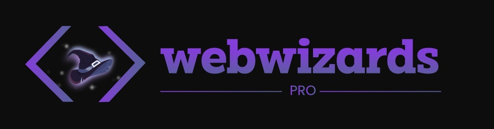
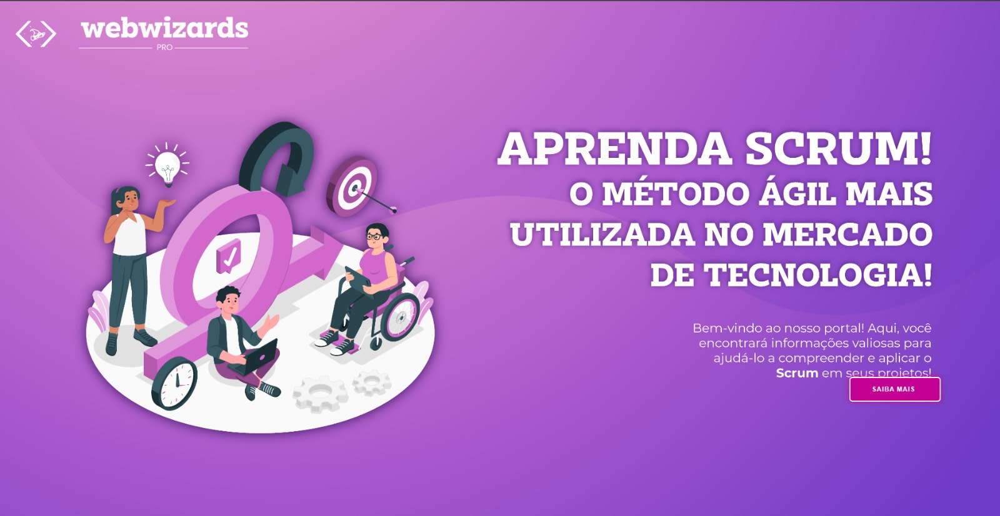
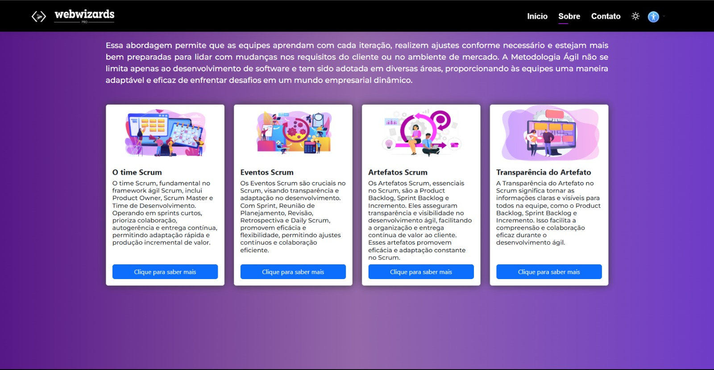
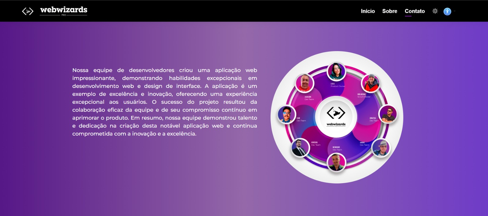
Web Wizards pro
informações do projeto
Plataforma de curso focado em ensinar Metodologias ágeis ao usuário, tendo como principal foco o Scrum.
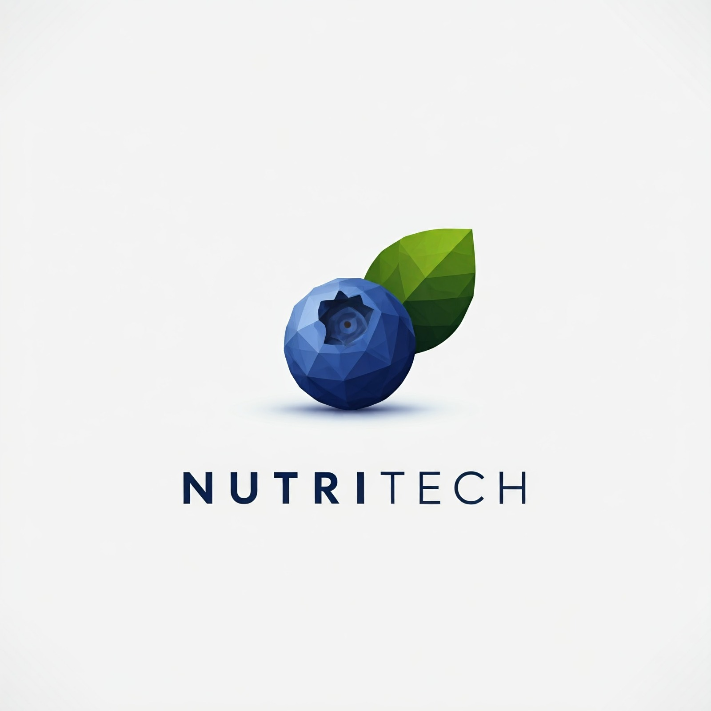
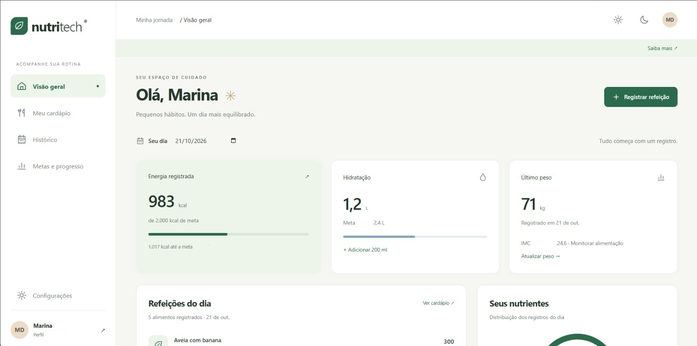
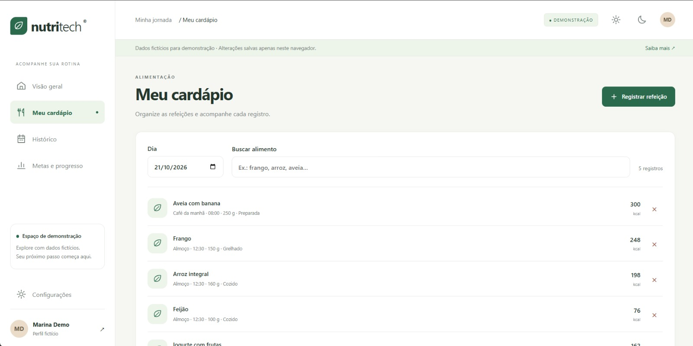
NutriTech
informações do projeto
Plataforma de controle nutricional e acompanhamento de dieta, e visualização de progresso físico.
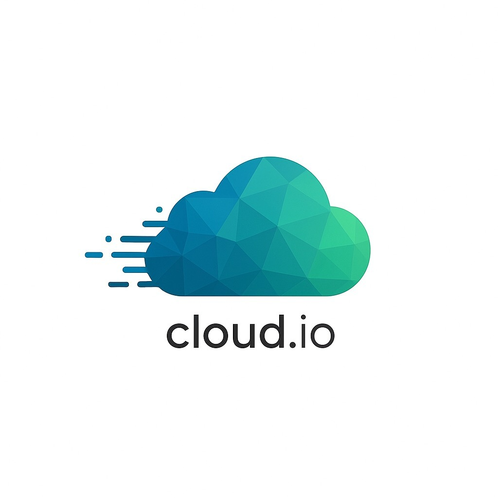
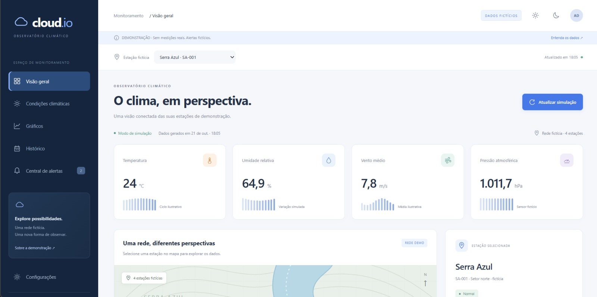
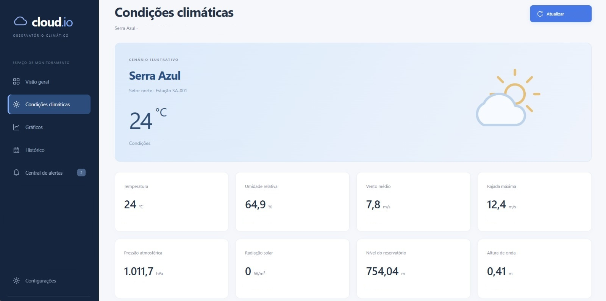
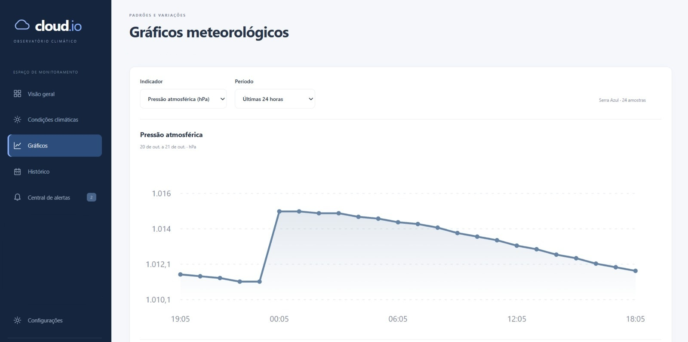
Cloud.Io
informações do projeto
Plataforma de levantamento e monitoramento climático, dos ventos e altura das ondas na região do lado de Furnas.
• Habilidades


Análise de Negócio e Requisitos: Levantamento e documentação de requisitos, reuniões com stakeholders, mapeamento de processos, histórias de usuário e organização de backlog.
Qualidade e Testes: Testes funcionais, validação de requisitos, registro de resultados e identificação de problemas.
Desenvolvimento Front-End: HTML5, CSS3, JavaScript, React, TypeScript, Bootstrap e Tailwind CSS.
Desenvolvimento Back-End: Node.js, PHP, Python e integração com APIs REST.
Banco de Dados: MySQL, PostgreSQL e MongoDB.
IA e PLN: Integração de modelos de linguagem (LLMs), desenvolvimento de fluxos conversacionais e aplicações de chatbot com processamento de linguagem natural.
DevOps, CI/CD e Conteinerização: Docker, conceitos de pipelines de integração e entrega contínuas, automação de etapas e GitHub Actions.
Ferramentas e Métodos: Git, GitHub, Trello, Figma, UML, Scrum e Kanban.
Suporte e Infraestrutura: Diagnóstico de problemas de software e hardware, suporte a usuários e configuração básica de equipamentos e infraestrutura.